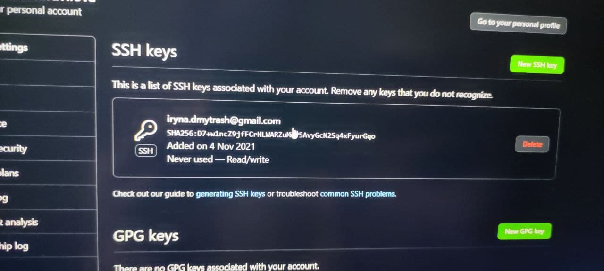

GITPAGES
- git config --global user.name -Устанавливает имя, которое будет отображаться в поле автора у выполняемых вами коммитов
- git config --global user.email -Устанавливает адрес электронной почты, который будет отображаться в информации о
выполняемых вами коммитах
- git init [название проекта] - Создаёт новый локальный репозиторий с заданным именем
- git status - Перечисляет все новые или изменённые файлы, которые нуждаются в фиксации
- git add [файл] - Индексирует указанный файл для последующего коммита
- git commit -m "[сообщение с описанием]" - Фиксирует проиндексированные изменения и сохраняет их в историю версий
- git log - История коммитов для текущей ветки
- git checkout - git-checkout - переключать ветви или восстанавливать файлы рабочего дерева
- git branch [имя ветки] - Удаляет выбранную ветку
- git push [удалённый репозиторий] [ветка] - Загружает все изменения локальной ветки в удалённый репозиторий
- git pull - Загружает историю из удалённого репозитория и объединяет её с локальной. pull = fetch + merge
- git merge [удалённый репозиторий],[ветка] - Вносит изменения из ветки удалённого репозитория в текущую ветку локального репозитория
- git clone [url-адрес] - Скачивает репозиторий вместе со всей его историей изменений
- .gitignore - указывает намеренно неотслеживаемые файлы, которые следует игнорировать.
- git revert - Отменить некоторые существующие коммиты
- git reset - Сбросить текущую head в указанное состояние
- git rebase - Повторно накладывает коммит поверх другого базового
- git cherry-pick - Применить изменения, внесенные некоторыми существующими коммитами
- git stash - git-stash - спрятать изменения в рабочем директории каталога.
